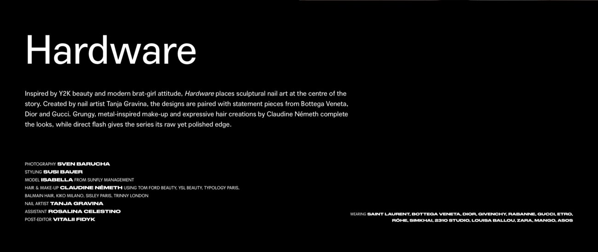
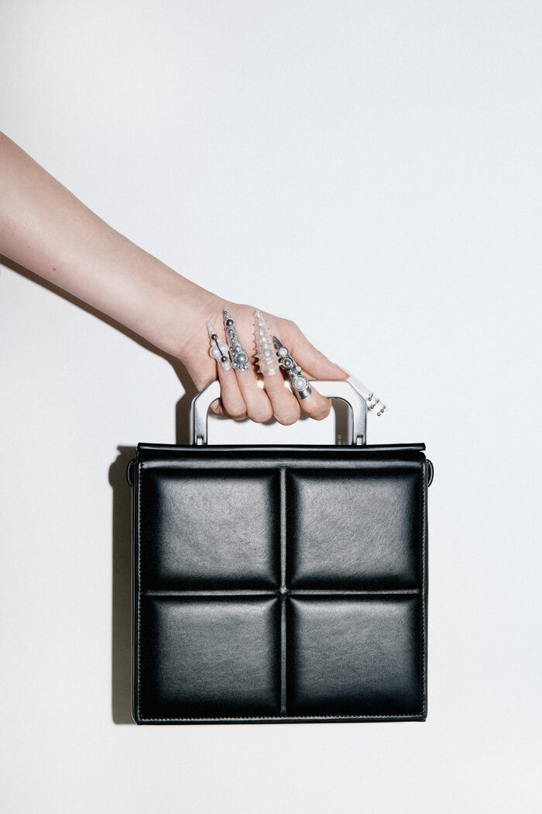
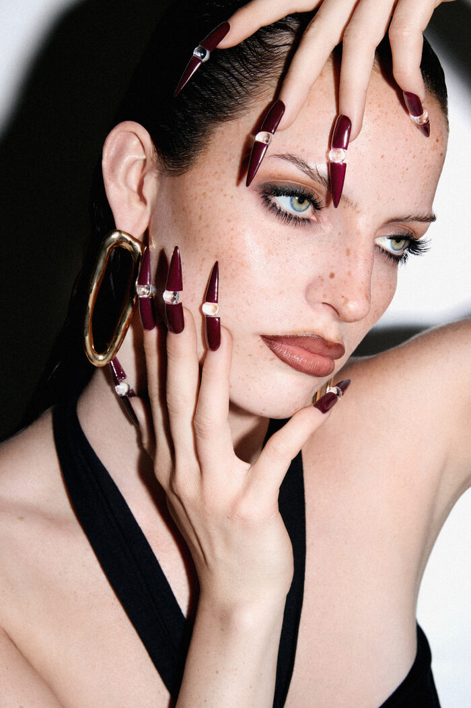
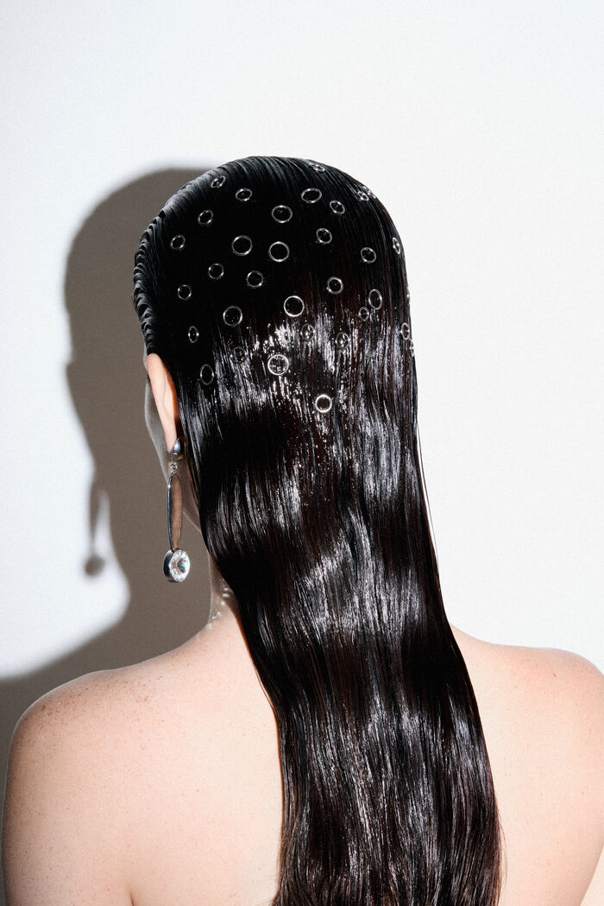

„Hardware" — Editorial für das SICKY Magazine

Beauty Editorial Shootmehr
Sven Barucha gestaltet aus Stuttgart heraus Bild — Beauty- und Kosmetikfotografie, Art Direction, Konzeption. @sbarucha
„Hardware" entstand als freier Editorial Shoot: neun Looks rund um skulpturale Nail Art von Tanja Gravina, kombiniert mit Statement-Pieces von Bottega Veneta, Dior und Gucci. Die Strecke wurde im Juli im SICKY Magazine veröffentlicht.
Als Shooting-Assistenz war ich für die Zuarbeit bei Fotografie, Styling und Hair & Make-up sowie für die Umsetzung des Moodboards mitverantwortlich. Zusätzlich lag der Behind-the-Scenes-Content bei mir — Konzept, Dreh und Schnitt, genutzt für Social-Media-Posts.
Behind the Scenes — eigene Produktion und Schnitt
Aus der veröffentlichten Strecke



Marken im ShootingSaint Laurent · Bottega Veneta · Dior · Givenchy · Rabanne · Gucci · Etro · Róhe · Simkhai · 2310 Studio · Louisa Ballou